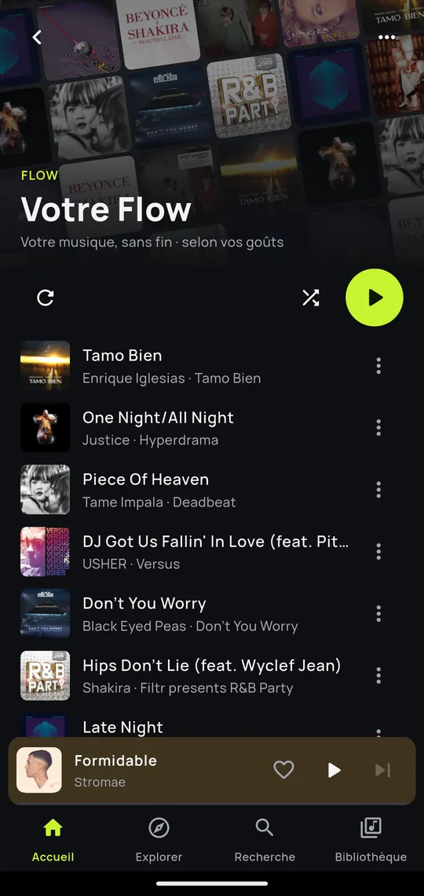
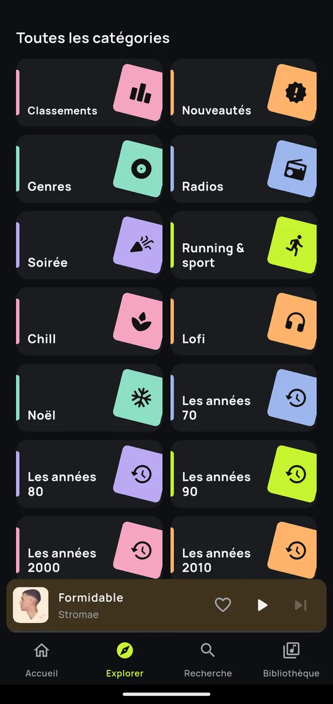
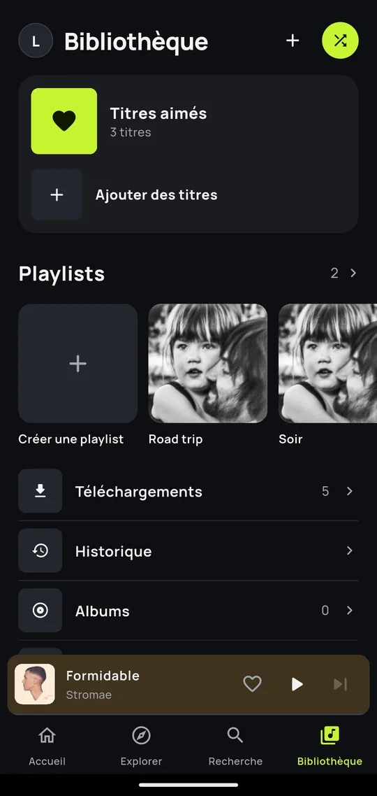
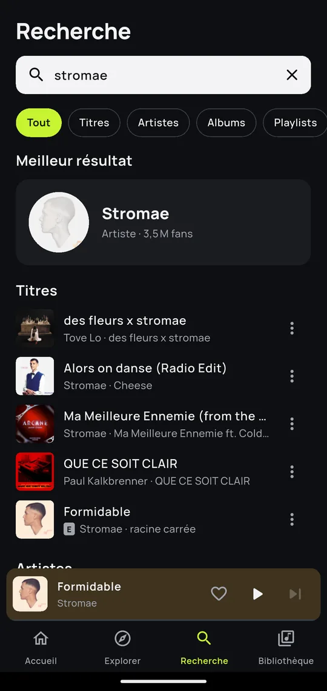
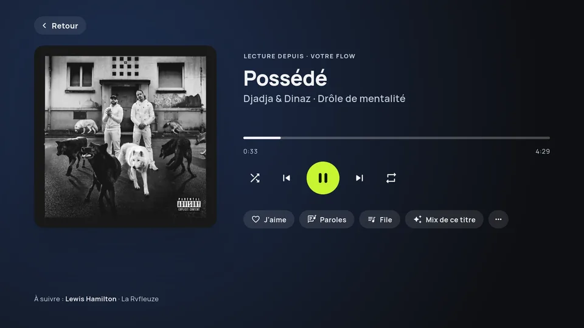

Gratuit · Sans pub · Sans compte
Toute la musique,
rien d'autre.
Kiwi est un lecteur de musique gratuit pour Android et Android TV, pour écouter les titres en entier, en arrière-plan, hors ligne et sur la télé du salon.
Un grand catalogue, un Flow qui ne s'arrête jamais, les paroles et leur traduction. Vos écoutes, vos playlists et vos titres téléchargés restent sur votre téléphone.
Sur une télé Android TV ou Google TV ? Installer sur la TVAndroid 7.0 ou plus récent et Android TV
- 0publicité
- 0compte à créer
- 100 %sur votre téléphone
Ce que fait Kiwi
-
Un grand catalogue
Titres, artistes, albums et playlists. Classements, nouveautés, genres, radios et une vingtaine de catégories à explorer.
-
Les titres en entier
En arrière-plan et écran verrouillé, avec les commandes au casque et dans la notification. Le lecteur s'ouvre et se ferme d'un geste.
-
Votre Flow, sans fin
Une liste de titres qui ne s'arrête jamais, tirée de vos goûts. Des ambiances (Chill, Soirée…) et des mixes inspirés par vos titres préférés.
-
Hors ligne
Téléchargez titres, albums et playlists avec leurs paroles. Les derniers titres écoutés restent en cache pour le métro ou la campagne.
-
Paroles et traduction
Paroles synchronisées, traduites dans votre langue en un appui, même pour les chansons en espagnol ou en anglais.
-
Le son à votre goût
Égaliseur avec préréglages et qualité audio réglable, pour économiser vos données mobiles ou profiter du Wi-Fi.
-
Votre mois en musique
Votre artiste du mois, vos titres les plus écoutés et un Accueil qui suit vos goûts. Tout est calculé sur le téléphone.
-
Rien ne sort du téléphone
Ni compte, ni serveur, ni pub, ni pistage. Sauvegardez votre bibliothèque dans un fichier quand vous voulez.
-
Toujours à jour
Kiwi prévient quand une nouvelle version sort et l'installe en quelques appuis. Pas besoin de revenir ici.
Un coup d'œil
Captures de Kiwi avec un profil de démonstration.




Kiwi sur la télé
Le même Kiwi, avec une interface faite pour la télécommande. Il s'installe sur les télés et boîtiers Android TV et Google TV.

Tout à la télécommande
La croix, OK et les touches lecture, pause, suivant. Un appui long ouvre le menu d'un titre.
Votre Accueil en grand
Vos mixes, vos artistes, vos ambiances et votre Flow, avec un grand fond qui suit la carte choisie.
Paroles en grand
Synchronisées et traduites, lisibles depuis le canapé.
Recherche au clavier ou à la voix
Un clavier à l'écran, ou le micro de la télécommande si votre télé le permet.
Écran de veille musical
La pochette, la ligne de paroles en cours et l'heure, pendant que la musique joue.
Installer Kiwi sur la télé
Kiwi n'est pas dans le magasin d'applis de la télé : il s'installe à partir d'un fichier. Le plus simple passe par Downloader, une appli gratuite qui télécharge un fichier depuis une adresse (elle n'a aucun lien avec Kiwi).
-
1
Installer Downloader
Sur la télé, ouvrez le magasin d'applis (Google Play), cherchez Downloader et installez-la.
-
2
Taper l'adresse
Ouvrez Downloader et tapez :
adamsellin.github.io/kiwi-releases/tvPuis choisissez Télécharger pour la TV.
-
3
Autoriser l'installation
La première fois, la télé bloque l'installation : touchez Paramètres, activez Downloader, puis revenez.
Sinon : Paramètres › Applis › Sécurité et restrictions › Sources inconnues. Sur Google TV, ce menu n'apparaît qu'après avoir appuyé 7 fois sur Build du système d'exploitation Android TV (Paramètres › Système › À propos).
-
4
Installer et écouter
Touchez Installer, puis Ouvrir. Kiwi rejoint vos applis : choisissez un pseudo et 5 artistes à la télécommande.
Pour presque toutes les télés Android TV et Google TV.
L'installation échoue ? Version universelle (plus lourde)Avec une clé USB
Sur un ordinateur, téléchargez le fichier « pour la TV » et copiez-le sur une clé USB. Branchez-la sur la télé et ouvrez le fichier avec un gestionnaire de fichiers. Autorisez cette appli comme à l'étape 3.
Depuis votre téléphone
Téléchargez le fichier sur le téléphone, puis envoyez-le à la télé avec une appli d'envoi de fichiers installée des deux côtés. Ouvrez-le sur la télé et autorisez comme à l'étape 3.
Ensuite, Kiwi se met à jour tout seul (Paramètres › Rechercher une mise à jour) : pas besoin de refaire ces étapes.
Installer Kiwi en trois étapes
Kiwi n'est pas sur le Play Store : il s'installe à partir d'un fichier APK, publié avec chaque version.
-
1
Télécharger
Depuis le téléphone, touchez le bouton ci-dessous. Le navigateur peut prévenir que ce type de fichier est inhabituel : confirmez.
-
2
Installer
Ouvrez le fichier. La première fois, Android demande d'autoriser cette source (« Installer des applis inconnues ») pour votre navigateur ou Fichiers : activez-la, revenez, puis touchez Installer.
-
3
Écouter
Choisissez un pseudo et 5 artistes : Kiwi prépare votre Accueil, votre Flow et vos mixes. Aucune inscription.
Pour presque tous les téléphones Android.
Autres versions (anciens téléphones, tablettes…)Questions fréquentes
Kiwi est-il vraiment gratuit ?
Oui. Pas d'abonnement, pas de publicité, pas d'achat dans l'app. Kiwi est un projet personnel, sans but commercial, et un logiciel libre (licence GPL v3).
Sur quels appareils fonctionne-t-il ?
Sur les téléphones et tablettes Android 7.0 ou plus récents, et sur les télés et boîtiers Android TV et Google TV, avec une interface faite pour la télécommande (voir Kiwi sur la télé). Il n'y a pas de version pour iPhone.
Ma bibliothèque passe-t-elle du téléphone à la télé ?
Non : rien ne passe par un serveur, chaque appareil garde ses propres titres aimés, playlists et historique. Au premier lancement sur la télé, choisissez simplement un pseudo et vos artistes.
Quel fichier choisir pour la télé ?
« Télécharger pour la TV » convient à presque toutes les télés, même les plus anciennes. Si l'installation échoue, prenez la version universelle, plus lourde.
Puis-je écouter sans réseau ?
Oui : téléchargez des titres, albums ou playlists, ils se lisent hors ligne avec leurs paroles. Les derniers titres écoutés restent aussi en cache, pour un réseau faible.
Kiwi collecte-t-il mes données ?
Non. Il n'y a ni compte ni serveur Kiwi : votre pseudo, vos goûts, vos playlists et votre historique restent sur le téléphone. Vous pouvez les sauvegarder dans un fichier et les importer sur un autre téléphone.
D'où vient la musique ?
Le catalogue (titres, pochettes, classements) vient de l'API publique Deezer. Kiwi n'héberge aucun fichier audio : il lit des contenus déjà publics. Les paroles viennent de LRCLIB, une base libre.
Comment recevoir les nouvelles versions ?
Kiwi prévient quand une nouvelle version est publiée et l'installe en quelques appuis (Paramètres > Rechercher une mise à jour). Vos titres et playlists sont gardés.
Ce site est-il la seule source officielle ?
Oui, avec la page des versions sur GitHub. Kiwi n'est ni sur le Play Store ni dans le magasin d'applis des télés : une app « Kiwi » trouvée ailleurs n'est pas la nôtre.